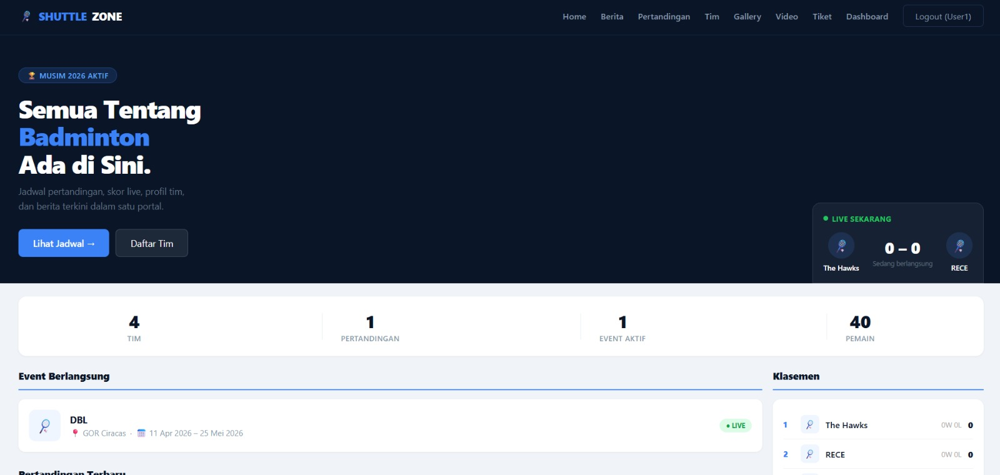
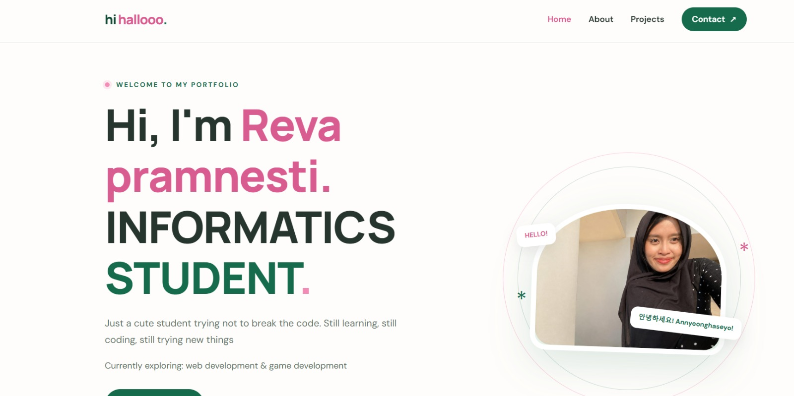

01

CREATIVE WEBSITE
Ctrl Snap Photobooth
Konsep website photobooth dengan fitur filter foto, frame, timer, stiker, teks, dan penyimpanan foto.
SELECTED WORKS
Beberapa project yang saya kerjakan selama proses belajar dan eksplorasi.
CREATIVE WEBSITE
Konsep website photobooth dengan fitur filter foto, frame, timer, stiker, teks, dan penyimpanan foto.

SPORTS INFORMATION
Website informasi turnamen badminton yang menampilkan data tim, pemain, jadwal pertandingan, dan event.

PERSONAL WEBSITE
Website personal untuk menampilkan profil, minat, dan project yang dibuat selama proses belajar.
Setiap project punya cerita dan proses belajarnya sendiri. Di sini aku berbagi hasil eksplorasi, ide kreatif, dan hal-hal baru yang aku pelajari selama ngoding.